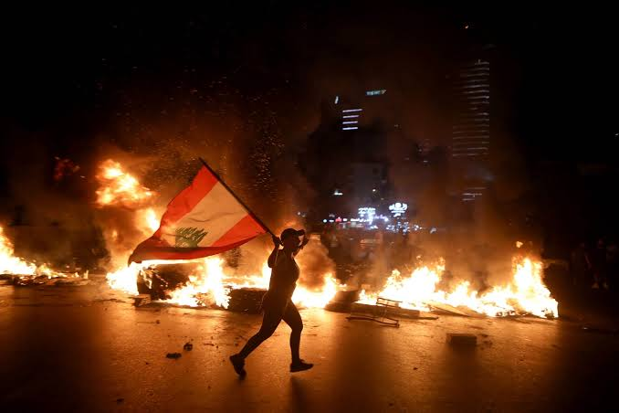

On the 4th of August 2020, news spread of a devastating fire that ignited around 3000 tonnes of ammonium nitrate at the port of Beirut- the main trading port of Lebanon. This explosion killed over 158 people and injured over 5,000 others - immediately reigniting immense instability in the nation.
From protests calling for the government’s resignation to accusations on multiple regional parties in these polarising times, speculators have been desperate to find a culprit to point their fingers at, especially amid all the vexations regarding the failing political and economic state of the nation. The real challenge here lies in examining the feasibility of any of these claims in the context of the volatile nature of conflicts in the Middle East. If the explosions are revealed to be intentional, it would shatter a prolonged stretch of relative calm in the Lebanese capital - at least as calm as the Middle East can get in. Prior to propagating claims that may further mistrust among factions already at each other’s throats, we must realise the strong likelihood of any conflict in the Middle East quickly transforming into a hotbed of instability and extremism. At the very least it will have a domino effect on all disputes involving the very same regional players.
It is critical to bear in mind the massive role of Hezbollah, a major actor in the Lebanese government and a militant group based in Lebanon - allegedly funded by Iran and Syria in its endeavour to achieve the obliteration of Israel. When it became clear that the Beirut port was the epicentre of the explosion, the immediate accusation fell on Hezbollah for the devastation.
The leading theory was that it was Israeli planes that targeted the port to destroy a large arsenal of explosives that Hezbollah had supposedly stored there. The president of Lebanon, the Hezbollah’s leadership and the Israeli representatives have unsurprisingly been on the same page with their responses to these accusations, resorting to a clear denial with Lebanon's President Michel Aoun dismissing it as an "impossible" suggestion, however, his statements lack any legitimacy as Aoun’s party is also a key ally of the Hezbollah movement.
There is one major problem with this theory: the Lebanese army and United Nations forces provide frequent updates detailing their movements, if any, in Lebanese airspace but no information has been released to indicate their presence in Beirut on the day of the explosion.
There have also been attempts to draw associations between the current Beirut explosion to the 2005 bombing in Lebanon when Rafik Hariri, a former prime minister, was killed along with 21 others by a car bombing of his motorcade. A United Nations-backed tribunal at The Hague recently gave their long-awaited verdict convicting a Hezbollah member. The tribunal most definitely has chances of yielding previously unknown information that would aid in resolving this conundrum.
The evidence that has emerged thus far, however, is telling a far more complicated, and less politically convenient story because Lebanon is notorious for government incompetence and mismanagement. Reports have emerged proving there was discussion within the government regarding what to do with the explosive material for years but failed to reach an agreement, including the fact that in June 2020, a judge had openly shared his concerns about its combustibility and possible theft.
This is why the strongest likelihood is that the August 4 explosion was caused not by an Israeli air raid on a secret Hezbollah arsenal, but by the endless incompetence of the government.
Lebanon’s failing political structure is not new information. While on paper it is a nation with an established democratic government structure, but in reality, we find it is a nation historically mired in a near-constant state of chaos with a band of competing militias holding political power. This can not only be seen in the infamous 1975-1990 civil war but also everything from airstrikes to assassinations involving both local and foreign actors in the last couple of decades, contributing to the nation’s instability.

This perpetual state of chaos leaves no time to build a stable government infrastructure or economy. While many point fingers solely on local backwardness as the sole cause, they often neglect that it is a direct consequence of global politics. Local factions active in the country draw their support from foreign allies. Iran, Saudi Arabia, the United States, Syria, France, and Israel have all supported, armed or bankrolled one militia or faction, and this has gone on for decades, transforming the country into a chessboard of cold wars, plots and mysterious explosions.
A government structure designed decades ago to balance Lebanon’s mosaic of religions and culture is crumbling under the worsening chronic corruption and the jolt from the current impact of the pandemic. This has caused devastating effects such as prices skyrocketing, the thinning supply of essentials and piling up of trash posing a hazard to public health and economy. The currency has lost 80 per cent of its value since October and the traditionally affluent middle class has been sinking into poverty.
Hence, it isn't surprising to see protests occurring after the blasts in Beirut which seems to have been the last straw of incompetency of the Lebanese government for their citizens, leading to the demand for an absolute abrogation of the current government. This prompted Prime Minister Hassan Diab and his entire cabinet to resign on Monday. However, what needs to be acknowledged is that the deep-rooted issues are far too pervasive to be able to be resolved by a simple change of management. Hasan Diab had only been installed recently to replace the previous prime minister who also faced the same fate of being forced to resign due to public ire. Though he has since been asked to stay on as head of a caretaker government, Hasan Diab stepped down nonetheless more out of frustration than contrition.
Many foreign governments have rushed to offer humanitarian assistance but demonstrators have warned donors not to channel their aid through the government which is highly indicative of the massive loss of popular faith. Attempts have been made to augment and stabilise the economy but the rescue plans with the IMF fell through due to partisan interests of sectarian leaders. With the USA not taking a keen interest, the task to address the crisis has naturally shifted to the European and the Middle Eastern powers, as well as international economic institutions viz., the I.M.F. and the World Bank. One must note that the efforts taken by Emmanuel Macron, President of France, who has been consulting with Lebanese and regional leaders on the formation of a new government, are laudable and inspires hope for the restoration of stability.
But none of this means we should stop asking questions in the slightest, many points of contention remain unresolved and various important questions unanswered. Beirut is volatile and highly dysfunctional and is also one of the most closely watched cities in the world. It is hard to believe that no one was looking when the Russian owned ship suffering "technical problems" was forced to change course and dock at Beirut's port loaded with tonnes of explosives. Especially when we realise a fleet of United Nations-mandated peacekeeping ships (UNSC Resolution 1701), patrols Lebanon's seas 24/7 with the clear objective of preventing "arms and related material" from reaching the port of Beirut. It is difficult to accept that, let alone the local authorities but even the intelligence agencies of major nations present in Lebanon and this specialized UN task force failed to bring any attention to highly suspicious activity such as this.
A lot remains unanswered but one can hope that the extensive investigations initiated by not only the Lebanese government but also major foreign nations and intergovernmental organisations will collaboratively be able to shed some light on this perplexing issue soon. This will hopefully pave the path towards restoring stability and bringing the focus back on socioeconomic progress in the nation.